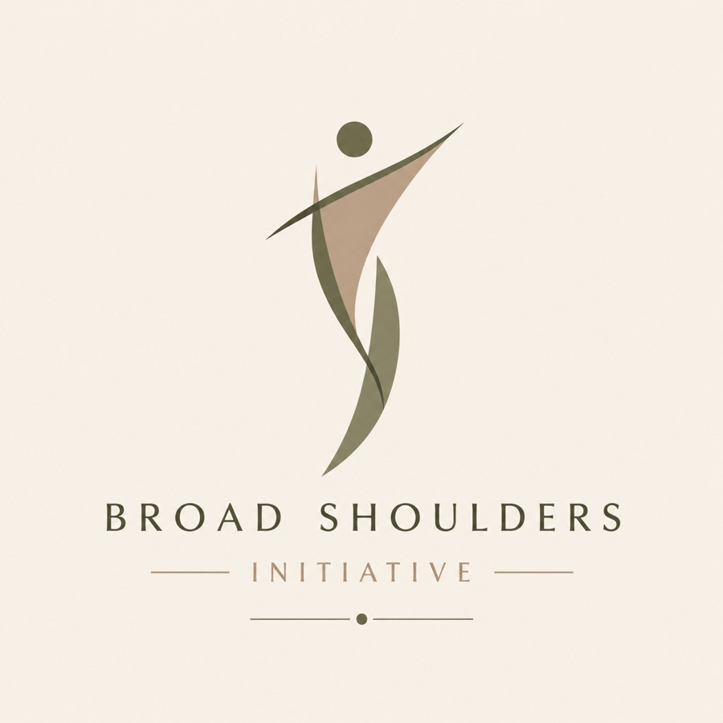
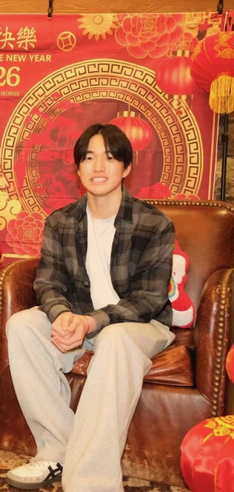
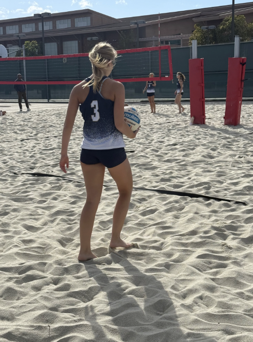
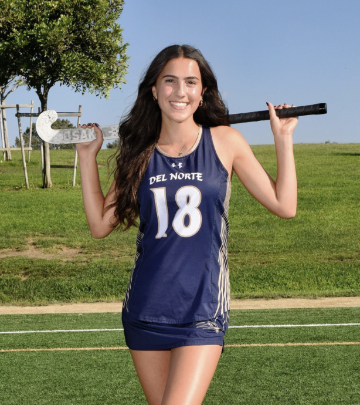
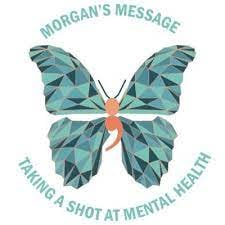
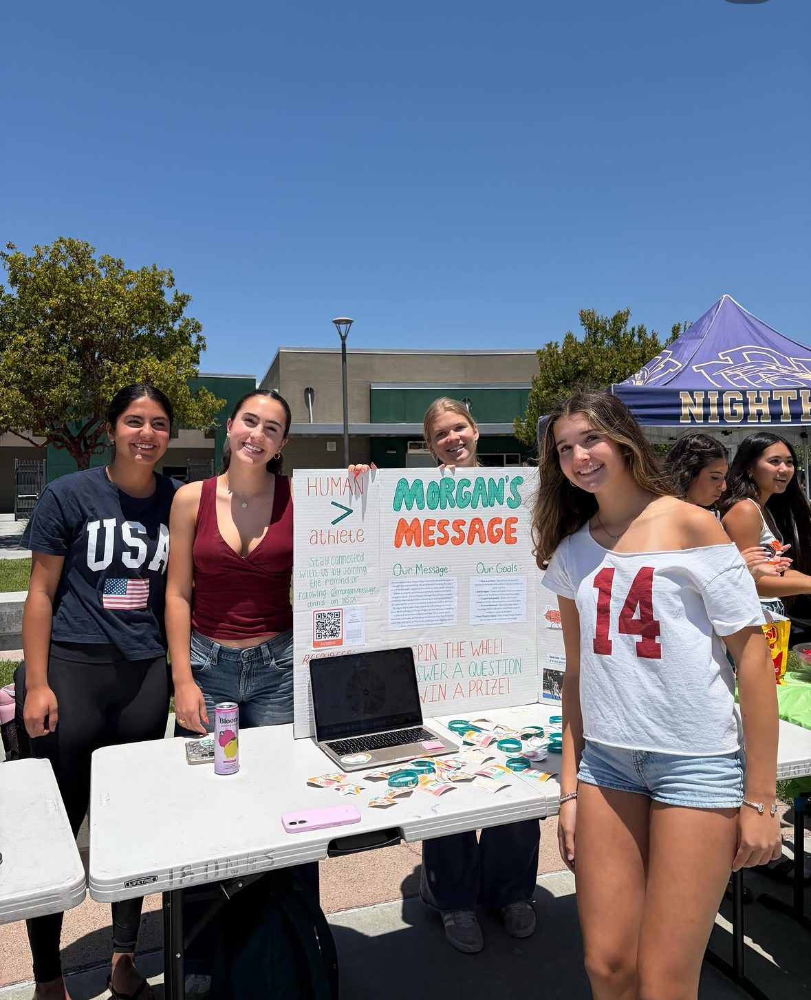

Read
Honest reflections on identity, pressure, family, athletics, and recovery.
Explore storiesYouth-led mental health storytelling
Broad Shoulders Initiative helps students feel less alone through honest stories, trusted resources, and community.

Students share what they carry. Readers find perspective, connection, and a starting point for support.
Honest reflections on identity, pressure, family, athletics, and recovery.
Explore storiesTell your story in your own words, at a length that feels right.
Start a submissionExplore trusted resources and youth-led collaborations.
See partnershipsPartnership in action · Kevin Love Fund
Through the Kevin Love Fund Youth Council, BSI founder Jonathan Wang helped support mental health programming at scale and helped create What You Can't See.
Explore the partnership →Story Archive
Personal stories about what students often feel they must handle alone.
Executive Leadership
Student leaders turning lived experience into connection and advocacy.



Origin Story
Jonathan's experience with body image, injury, and athletic identity became the starting point for BSI.
Read Jonathan's Story →Resource Spotlight
Resources for athletes navigating pressure, injury, identity, and mental health.

Community in Action
On May 21, 2026, student groups and community partners gathered at Del Norte High School to share mental wellness resources and create space for conversation.
Read More About the Fair →
Morgan's Message DNHS ambassadors share student-athlete mental health resources.
Submit a Story
Send a short reflection, a fuller essay, a poem, or a note of support. Share only what feels safe.
Share Your Story